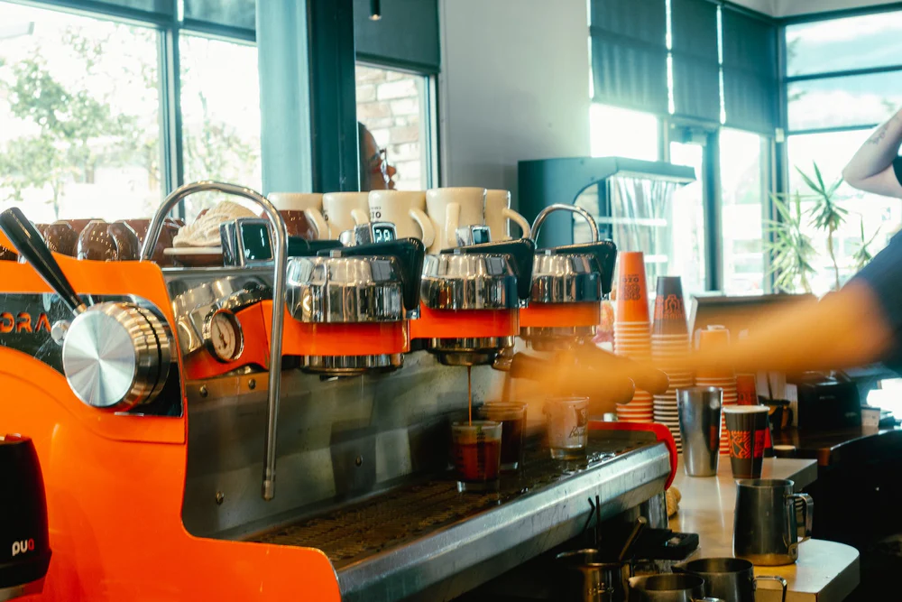
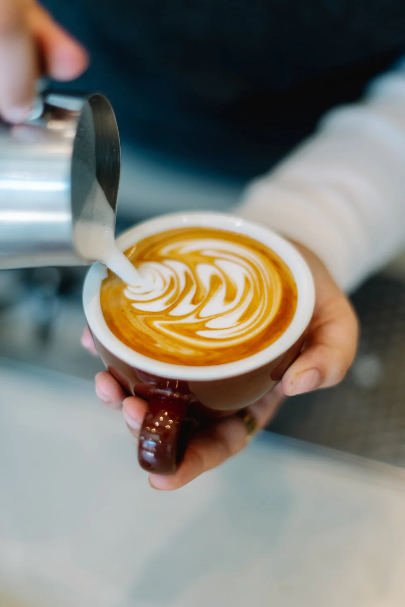

Corrected Link Text
The recoded component here is to change some of the previous buttons on the site such as:
and change the button to be more clear with given context, such as with the given class context:

Barista Class | May 31st, 9am–12pm
This class is geared toward those wanting to dive into the world of
espresso and milk steaming. We will talk about pulling great espresso shots,
the factors that go into them, and the basics of milk texture.

Latte Art | May 24th, 9–11am
This class is geared toward those already comfortable with their home
espresso machine and who want to take milk steaming and latte art to the next level.
Barista Class | May 17th, 9am–12pm
This class is geared toward those wanting to dive into the world of
espresso and milk steaming. We will talk about pulling great espresso shots,
the factors that go into them, and how to practice consistently.
This way, the button has more context to it rather than "View all", which can be pretty vague and doesn't always give the user a ton of
information as to what more they're actually viewing. Another correction of some link text found within Ozo's website is from one article
as shown below:
There's a lot of link-text shown in this article. A different approach to this could be to only have one reference link in the beginning
of the article that leads to the subscription page, while removing all of the other reference links, so that there's no redundant text links
leading to the same place and that this also doesn't confuse viewers into thinking the links might lead to somewhere else when they don't.
If you’re shopping for someone who loves great coffee, a
fresh roasted coffee subscription
is one of the most thoughtful and practical gifts you can give. (rest of text)
1. It’s the Best Gift for Coffee Lovers Who Have Everything
Many people already own mugs, tumblers, or coffee gear, but few receive months
of fresh coffee delivered directly to their door. (rest of text)
2. Fresh Roasted Coffee Delivered to Their Door
OZO Coffee subscriptions include beans roasted just days before delivery. (rest of text)
3.A Coffee Subscription That’s Fully Customizable
You can tailor the subscription to suit any coffee drinker. (rest of text)
Really, the main idea is to just rid of all of the excessive link texts that are put onto the article. There really only needs to be one
link at the beginning, as having links going to the same place everywhere in one article can be extremely unnecessary and inconvenient, while
also looking a bit unprofessional.